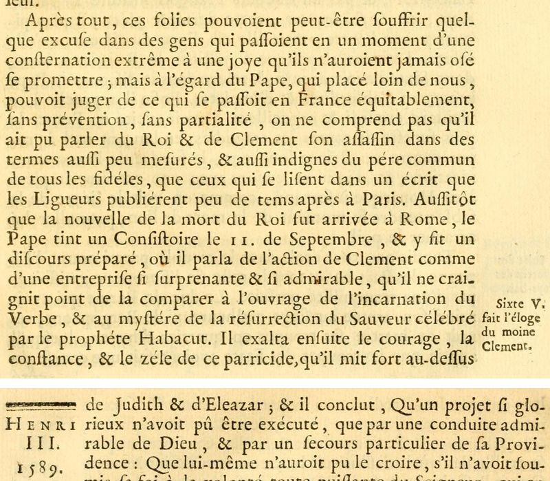
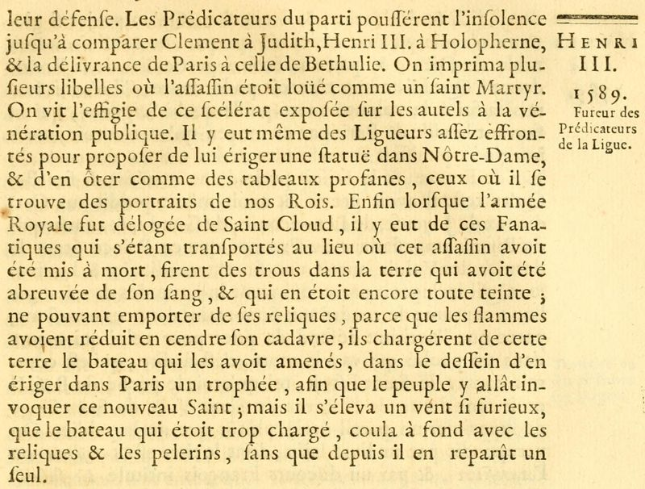

Sixtus V’s speech in consistory, 11 September 1589 (tome X, pp. 679–680)
French: 1734 translation, tome X, book XCVI, pp. 679–680, scans n702–n703. Spelling as printed, long s normalised. Highlighted: what Lecky reports.

After all, these follies might perhaps be excused in people who passed in a moment from extreme dismay to a joy they would never have dared to hope for; but as for the Pope, who, placed far from us, could judge of what was happening in France fairly, without prejudice or partiality, one cannot understand how he could speak of the King and of Clément his assassin in terms as immoderate, and as unworthy of the common father of all the faithful, as those that are read in a text the Leaguers published in Paris shortly afterwards. As soon as the news of the King’s death reached Rome, the Pope held a consistory on 11 September, and made a prepared speech in it, in which he spoke of Clément’s act as an enterprise so surprising and so admirable that he did not fear to compare it to the work of the incarnation of the Word, and to the mystery of the resurrection of the Saviour celebrated by the prophet Habakkuk. He then extolled the courage, the constancy and the zeal of this parricide, whom he set far above Judith and Eleazar; and he concluded that so glorious a project could have been carried out only by an admirable conduct of God, and by a particular help of his Providence …
Original French
Après tout, ces folies pouvoient peut-être souffrir quelque excuse dans des gens qui passoient en un moment d’une consternation extrême à une joye qu’ils n’auroient jamais osé se promettre; mais à l’égard du Pape, qui placé loin de nous, pouvoit juger de ce qui se passoit en France équitablement, sans prévention, sans partialité, on ne comprend pas qu’il ait pu parler du Roi & de Clement son assassin dans des termes aussi peu mesurés, & aussi indignes du pére commun de tous les fidéles, que ceux qui se lisent dans un écrit que les Ligueurs publiérent peu de tems après à Paris. Aussitôt que la nouvelle de la mort du Roi fut arrivée à Rome, le Pape tint un Consistoire le 11. de Septembre, & y fit un discours préparé, où il parla de l’action de Clement comme d’une entreprise si surprenante & si admirable, qu’il ne craignit point de la comparer à l’ouvrage de l’incarnation du Verbe, & au mystére de la résurrection du Sauveur célébré par le prophéte Habacut. Il exalta ensuite le courage, la constance, & le zéle de ce parricide, qu’il mit fort au-dessus de Judith & d’Eleazar; & il conclut, Qu’un projet si glorieux n’avoit pû être exécuté, que par une conduite admirable de Dieu, & par un secours particulier de sa Providence …
Lecky (vol. II, ch. V, text at note 70): “The Pope publicly pronounced the act to be worthy of ranking with that of Judith, he said that it could only have been accomplished by the special assistance of Providence, and he blasphemously compared it to the Incarnation and to the Resurrection.” All three points are De Thou’s; his Pope puts Clément not level with Judith but “fort au-dessus”, far above her. De Thou also notes that the speech is known from the text the League printed in Paris, and (p. 680, read only in the OCR) that it was answered in a Latin Antisixtus and a French pamphlet.
Relics of the regicide (tome X, p. 679)
French: 1734 translation, tome X, p. 679, scan n702, a few lines above the passage on the Pope.

The party’s preachers carried their insolence so far as to compare Clément to Judith, Henri III to Holofernes, and the deliverance of Paris to that of Bethulia. Several pamphlets were printed in which the assassin was praised as a holy martyr. The villain’s image was set up on altars for public veneration. Some Leaguers were even shameless enough to propose raising a statue to him in Notre-Dame, and removing as profane pictures those that showed our kings. Finally, when the royal army had left Saint-Cloud, some of these fanatics went to the place where the assassin had been put to death and dug holes in the earth that had drunk his blood and was still stained with it; since they could not carry away his relics, the flames having burnt his body to ashes, they loaded the boat that had brought them with this earth, meaning to build a monument with it in Paris for the people to come and invoke this new saint. But so furious a wind arose that the boat, overloaded, sank with the relics and the pilgrims, and not one of them was seen again.
Original French
Les Prédicateurs du parti poussérent l’insolence jusqu’à comparer Clement à Judith, Henri III. à Holopherne, & la délivrance de Paris à celle de Bethulie. On imprima plusieurs libelles où l’assassin étoit loüé comme un saint Martyr. On vit l’effigie de ce scélérat exposée sur les autels à la vénération publique. Il y eut même des Ligueurs assez effrontés pour proposer de lui ériger une statuë dans Nôtre-Dame, & d’en ôter comme des tableaux profanes, ceux où il se trouve des portraits de nos Rois. Enfin lorsque l’armée Royale fut délogée de Saint Cloud, il y eut de ces Fanatiques qui s’étant transportés au lieu où cet assassin avoit été mis à mort, firent des trous dans la terre qui avoit été abreuvée de son sang, & qui en étoit encore toute teinte; ne pouvant emporter de ses reliques, parce que les flammes avoient réduit en cendre son cadavre, ils chargérent de cette terre le bateau qui les avoit amenés, dans le dessein d’en ériger dans Paris un trophée, afin que le peuple y allât invoquer ce nouveau Saint; mais il s’éleva un vent si furieux, que le bateau qui étoit trop chargé, coula à fond avec les reliques & les pelerins, sans que depuis il en reparût un seul.
Further down the rabbit hole
Sources that Lecky cites in the notes next to the ones that cite this page.
- Ayala, De jure et officiis bellicisAnyone may kill a usurper, not a lawful prince
- Suárez, Defensio fidei catholicae, Book VIMay the Pope release subjects from their oath to a king? The Jesuit reply to James I
- Molina, De justitia et jureWhat Lecky left out of Molina on killing tyrants
- Sá, Aphorismi confessariorumLecky quotes Sá word for word on tyrants
- An Homily against Disobedience and Wilful RebellionHell as the prison of rebels: the Church of England preaches obedience
- Aquinas, Summa theologiae, II-IIHeretics and forgers; the usurper’s subjects


Backlinks
Every place in Rationalism in Europe that links to this page (generated automatically when the site is built).
- Chapter V: note 70